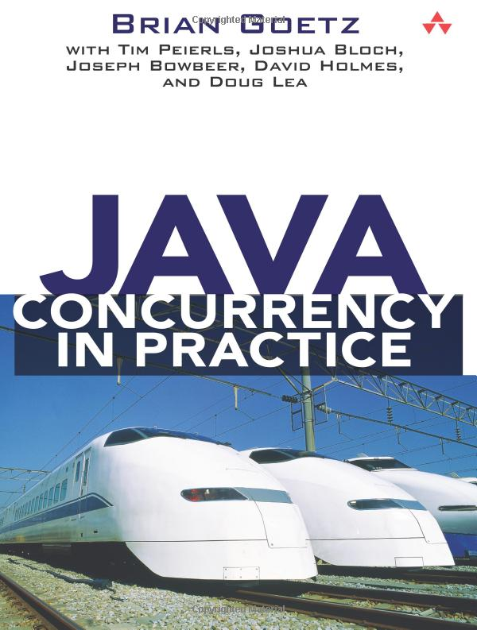

Java Interview
Лекция 1
 | Ivan Ponomarev
|
Взглянем на задачу глазами интервьюера
За короткое время надо понять, обладаете ли вы достаточно обширными познаниями
Задаются вопросы на случайные факты.
Неправильный ответ не гарантирует, что вы плохо знаете другие вещи
Правильный ответ не гарантирует, что вы хорошо знаете другие вещи
Что происходит дальше
Вопросы утекают во всевозможные посты, сборники вопросов и т. д. и перестают работать
Придумываются всё более заковыристые, всё менее показательные вопросы
Дурная борьба продолжается
В идеальном случае…
"Знание некоторых принципов легко компенсирует незнание некоторых фактов"
(Какой-то мудрец)
Источники познаний о некоторых принципах
Курсы лекций
Тагир Валеев, CSC | Иван Пономарев, МФТИ. Core Java https://inponomarev.ru/corejava |
Книги
Core Java  | Modern Java in Action  | Effective Java  | Java Concurrency in Practice  |
— можно уверенно утверждать, что после них вы пройдёте собес с адекватным интервьюером
Неадекватный вопрос
Что произойдёт?
var i = 1;
while (false) {
i = 2;
}
System.out.println(i);Не скомпилируется, потому что unreachable statement
(see JLS 14.22, https://docs.oracle.com/javase/specs/jls/se21/html/jls-14.html#jls-14.22)
Другой неадекватный вопрос
Что произойдёт?
var i = 1;
if (false) {
i = 2;
}
System.out.println(i);Скомпилируется и выведет 1, потому что в том же JLS 14.22 сделано исключение для if.
Ещё о неадекватных интервью
2016 Александр Маторин — Неадекватное Java-интервью https://www.youtube.com/watch?v=AR9dtVaEUSM
2017, 2019 Антон Архипов — Неадекватное Java-интервью https://www.youtube.com/watch?v=Vlb_Is-rRTQ
"Никакие результаты интервью, тестовых заданий, энциклопедические знания не показывают, КАК ЭТОТ ЧЕЛОВЕК БУДЕТ РАБОТАТЬ" (с) Антон Архипов
Что нынче спрашивают на Java интервью?
Кирилл Грищук "За последние два месяца я прошёл более 30 собеседований"
(подкаст Javaswag с Кириллом https://javaswag.github.io/episode/48/)
Понимание в целом
Что такое Java?

Понимание платформы в целом
Что такое Java?
Ultimate source of truth: https://docs.oracle.com/javase/specs/index.html
Java Language Specification (872 стр)
Java Virtual Machine Specification (626 стр)
Фундаментальные вопросы
Что такое байт-код?
Что происходит с байт-кодом во время выполнения?
Верификация
Интерпретация
JIT-компиляция
Garbage Collection (вопросы с бесконечной глубиной)
Что такое Garbage Collector?
Как работает Garbage Collector в Java?
Какие бывают Garbage Collectors?
Зачем вообще нужны разные Garbage collectors?
Инфраструктура
Умеете ли вы пользоваться Maven и Gradle?
Maven Central координаты, репозитории.
Что делать, если "Could not find artifact"?
Object
Бессмертная классика:
"Назови все методы класса Object"
Object: абсолютная база :-)
public String toString()
public native int hashCode();
public boolean equals(Object obj)Как впечатлить интервьюера
Формальный контракт equals:
Рефлексивность:
\(\forall x \ne \mathrm{null} (x.equals(x))\)Симметричность:
\(\forall x \ne \mathrm{null} \, \forall y \ne \mathrm{null} (x.equals(y) \iff y.equals(x))\)Транзитивность:
\(\forall x \ne \mathrm{null} \, \forall y \ne \mathrm{null} \, \forall z \ne \mathrm{null} (x.equals(y) \& y.equals(z) \Rightarrow x.equals(z))\)Консистентность: если сравниваемые объекты не изменялись, повторный вызов
equalsдолжен возвращать одно и то же значение.\(\forall x \ne \mathrm{null} (x.equals(\mathrm{null}) = \mathrm{false})\)
Как впечатлить интервьюера
Формальный контракт hashCode:
Консистентность: если объект не изменялся, повторный вызов
hashCodeдолжен возвращать одно и то же значение (но не обязательно одно и то же между разными запусками приложения)Связь с
equals:
\(\forall x \forall y (x.equals(y) \Rightarrow x.hashCode() = y.hashCode())\)Хотя
\(x.hashCode() = y.hashCode() \Rightarrow x.equals(y)\)
и не обязательно, но желательно для большинства случаев.
Добиваем вопрос про equals/hashCode
Кодогенерация в IDE
Lombok
Java 14+: records
Библиотека EqualsVerifier: https://jqno.nl/equalsverifier/
Методы Object: что-то про concurrency
public final native void notify();
public final native void notifyAll();
public final void wait()
//и ещё два разных overloaded-варианта waitМетоды Object: что-то про рефлексию
public final native Class<?> getClass()Методы Object: неведомая фигня и неудавшиеся идеи
protected Object clone()
protected void finalize()Популярный вопрос: "расскажи про final, finally и finalize ".
Wrapper классы, примитивы, строки
Примитивные типы несовместимы с объектами.
Нельзя сделать List<int> (по крайней мере, пока).
Поэтому есть Wrapper Classes:
|
|
|
|
|
|
|
|
Кэширование (object pool)
|
Что и как кэшируется
Integer,Short,Long— -128..127Byte— полностью (-128..127)Character— 0..127Boolean—Boolean.TRUEиBoolean.FALSEFloat,Double— не кэшируются
Вывод: надо использовать autoboxing и valueOf, а new не надо использовать.
Вопросы
Для чего нужны Wrapper классы?
Что такое automatic boxing/unboxing? Какие подводные камни?
Сравнение по
equalsи==:
Integer a = 1;
Integer b = 1;
Integer c = 999;
Integer d = 999;
System.out.println(a == b); // ?
System.out.println(c == d); // ?Неадекватный вопрос
-XX:AutoBoxCacheMax=NEWVALUEСтроки
Устроены практически так же, как boxed primitives
|
Внутреннее устройство строк
Неадекватный вопрос: что делает метод
intern()?Больше подробностей про эволюцию внутреннего устройства строк:"LJV: Чему нас может научить визуализация структур данных в Java"
Иерархия классов исключений

Вопросы
Какие в Java бывают исключения?
Можем ли мы выбрасывать
Throwable?А
Error?А
Exception?
Какое внутренне состояние хранит в себе
Throwable?Checked vs Unchecked exceptions?
Переопределение методов с checked-исключениями
Исключение может быть того же типа или субтипа
Не возбраняется, если его не будет вообще
"Умная" проверка типа перевыбрасываемого исключения
. . . throws SQLException . . .
try {
//доступ к БД -- может выбросить SQLException
} catch (Exception e) {
logger.log(level, message, e);
//хотя Exception есть тип более широкий,
//чем задекларирован в методе, компилятор поймёт,
//что всё ок
throw e;
}Что делать с checked-исключением?
Задекларировать в методе
Поймать, правильно обернуть через
initCause()и перевыбросить declared checked/unchecked exception.Lombok’s
@SneakyThrows"Throw early, catch late" правило
Очень адекватный вопрос
Ваше мнение по поводу функциональности checked-исключений в Java?
Try-catch-finally
Что будет результатом выполнения
public Integer get() {
try {
return 1;
} catch (Exception ignored) {
return 2;
} finally {
return 3;
}
}3: finally выполняется всегда, даже если return "выскакивает" из try-блока
Try-catch-finally
Что будет результатом выполнения
public Integer get() {
try {
throw new RuntimeException();
} catch (Exception ignored) {
return 2;
} finally {
return 3;
}
}3: finally выполняется всегда
try-with-resources
try (Foo first = new Foo();
Foo second = new Foo()) {
....
}Что даёт try-with-resources?
избегаем nested-блоков
избегаем потери исходного исключения если сломалось что-то в finally-блоке
нет никакого смысла использовать try-finally, если можно использовать try-with-resources
Дженерики
Параметризованные классы и параметризованные методы
Type Erasure и связанные с ним ограничения (исторический контекст)
//Параметризованный класс
public class Pair<T> {
private T first; private T second;
...
}
//Параметризованный метод
public <T> T getRandomItem(T... items) {
return items[ThreadLocalRandom.current().nextInt(items.length)];
}Стирание типов → невозможность определить параметр типа в Runtime
//ошибка компиляции! не знаем мы в рантайме параметр типа!
if (a instanceof Pair<String>) ...
//вот так -- получится...
if (a instanceof Pair<?>) ...Стирание типов до Object → невозможность использовать примитивные типы в качестве параметров
//увы, невозможно!
List<int> integers = ... //ошибка компиляции!
List<Integer> integers = ...
integers.add(42); /*под капотом будет autoboxing:
integers.add(Integer.valueOf(42);*/
int v = integers.get(0); /*под капотом будет
unboxing: v = integers.get(0).intValue();*/Примитивы и дженерики
"Костыли" для избегания боксинга.
В стандартной библиотеке:
Stream<Integer>→IntStreamStream<Double>→DoubleStream.
В специализированных библиотеках вроде fastutil:
ArrayList<Integer>→IntArrayList,HashMap<Integer, V>→Int2ObjectMap<V>(реальная потребность в таких библиотеках возникает ультра-редко, но осведомленность на собесе пойдёт вам в плюс)
День завтрашний: Project Valhalla, specialized generics. Решит проблему раз и навсегда.
Массивы и дженерики
Так можно делать? Почему?
List<String>[] a = new ArrayList<String>[10];Не скомпилируется: Generic Array Creation. Такой массив не будет иметь полную информацию о своих элементах и через него можно будет устроить Heap Pollution
Массивы и дженерики: varargs
А так можно делать?
void dangerous(List<String>... stringLists) {
//какой тип у stringLists?
}Да, но для устранения compiler warning нужнопоставить аннотацию @SafeVarargs, пообещав не менять содержимое массива и не передавать ссылку на массив за пределы метода.
Heap Pollution
Что тут происходит?
Pair<Integer> intPair = new Pair<>(42, 0);
Pair<?> pair = intPair;
Pair<String> stringPair = (Pair<String>) pair;
stringPair.b = "foo";
System.out.println(intPair.a * intPair.b);Heap Pollution: ситуация, когда переменная параметризованного типа ссылается на объект несовместимого типа. К сожалению, такое состояние достижимо в Java.
Вариантность типов
Что произойдёт при попытке скомпилировать такой код?
List<?> l = new ArrayList<Object>();
l.add(new Object()); //line 1
l.add("hello"); //line 2
l.add(null); //line 3Unbounded wildcard <?> означает "неизвестный тип",
поэтому Java выдаст ошибку компиляции на строчках 1 и 2,
и скомпилирует строчку 3.
Вариантность типов (или зачем нужны wildcard types)

Person[] pa = ...; List<Person> pl = ...;
Employee[] ea = ...; List<Employee> el = ...;
Manager[] ma = ...; List<Manager> ml = ...;
ea = pa; //line 1
el = pl; //line 2
ea = ma; //line 3
ml = el; //line 41 и 2 не скомпилируются, т. к. Employee есть более специфичный тип чем Person и в массиве (списке) персон могут находиться не сотрудники. 3 скомпилируется в силу ковариантности массивов, 4 не скомпилируется в силу инвариантности дженериков.
Вариантность типов: PECS-правило
Объясните, почему у метода
Collections.maxтакая сигнатура:
public static <T> T max (
Collection<? extends T> coll,
Comparator<? super T> comp)PECS: Producer Extends, Consumer Super
Про дженерики и вариантность
Лекция 6: Generics https://www.youtube.com/watch?v=HFs_ZPNkdjo
Вариантность типов в Java и Kotlin: https://www.youtube.com/watch?v=YbpHAD0sh1s
Collections API: потомки Collection
Вопросы
Как устроен
ArrayList/LinkedList?Как устроена вставка? Какова асимптотическая сложность соответствующих операций? ("Amortized complexity")
Чем так плох
LinkedList?Как устроен
Set? (урезанныйMap)
ArrayList
Свойства ArrayList
get(int index)is O(1) ← main benefit ofArrayList<E>add(E element)is O(1) amortized, but O(n) worst-case since the array must be resized and copiedO(n) (with n/2 steps on average):
add(int index, E element)remove(int index)Iterator.remove()ListIterator.add(E element)
LinkedList
Свойства LinkedList
Implements
ListandDequeO(n) (with n/4 steps on average)
get(int index)remove(int index)add(int index, E element)(but O(1) when adding to head or tail of the list)
O(1)
add(E element)Iterator.remove()ListIterator.add(E element)
Does anyone use LinkedList?

Thanks for listening!
@inponomarev